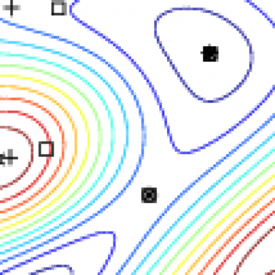
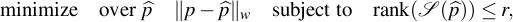
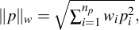
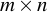
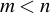
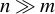
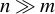

|  | Penalized SLRA |
Overview
SLRA is a C software with interface to MATLAB, Octave, and R for solving low-rank approximation problems

with the following features:
mosaic Hankel structured approximating matrix
 ,
,weighted 2-norm approximation criterion

fixed elements in the approximating matrix,
missing elements in the data matrix,
linear constraints on an approximating matrix's left kernel basis.
For an  matrix , with , the computational complexity of the cost function and derivative evaluation is  , so that the package is suitable for applications with . Problems with
, so that the package is suitable for applications with . Problems with  can not be solved by the method, used in the software.
can not be solved by the method, used in the software.